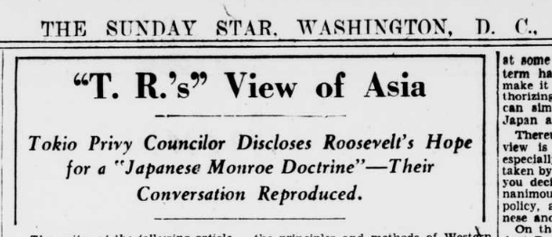
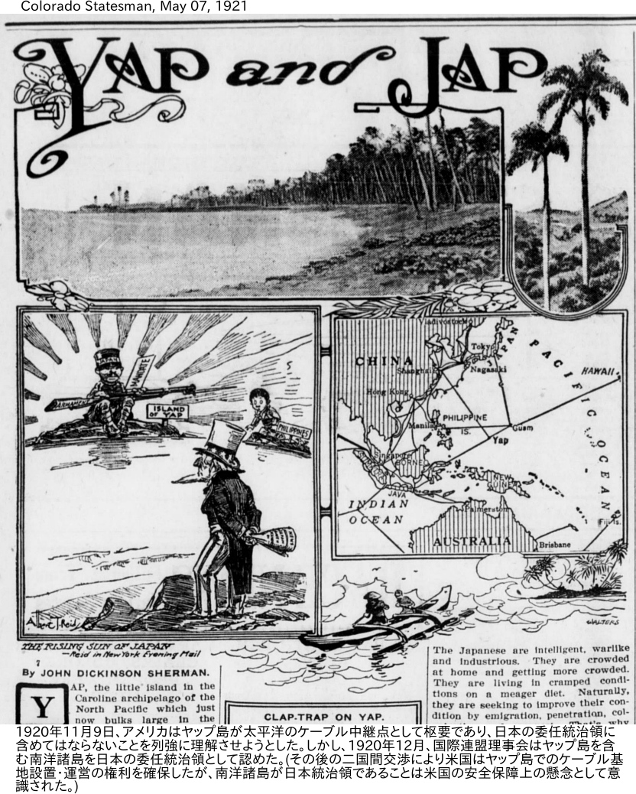

Rise and fall of Japanese Monroe doctrine - 日本版モンロー・ドクトリン盛衰記¶
{kind=link}
満州国建国(1932年9月)の直後に 金子堅太郎の回顧 [sstar32] が出て以来、"Japanese Monroe doctrine"とは、1905年のポツダム会議当時に セオドア・ルーズベルト が金子に勧めたものだとも言われる。
その米国の モンロー・ドクトリン とは一言で言うなら、次のようなものである。
諸君の知らるる通り、米国の大統領の「モンロー」がかつて宣言書を出した。これは「モンロードクトリン」というて亜米利加合衆国ではほとんど神聖視している。これは即ち亜米利加合衆国は自分の勢力範囲に欧羅巴の干渉は断じて許さないと同時に、欧羅巴の事件に関係しないということを宣言したのである。
(1904(明治37)年10月23日, 大隈重信演説「東亜の平和を論ず」)
{kind=link}
金子の回顧よりだいぶ前の1897年、 米国の新聞紙上で 大隈重信 が"Japanese Monroe doctrine"の主唱者とされた ( 下表 )。大隈は後に日本人がアジアにモンロー主義を唱えるなどあってはならないと批判したのだが、その当時は、言葉尻をとらえればそんな風に聞こえることを言っていたのも事実である。
"Japanese Monroe doctrine"のもとの出どころは、英国人ジャーナリスト ヘンリー・ノーマン [norman95] であろう。ノーマンは、"the Government of Japan has conceived a parallel to the Monroe Doctrine for the Far East, with herself at its centre. "(日本政府は極東において自身を中心に置くモンロー・ドクトリンと相似たものを構想している)との推断を下し、その根拠の一つに大隈の発言を記したのだった。それが、米紙に引用されたのである。このころから、"Japanese Monroe doctrine" のレッテルが欧米の対日論に使われる。
おそらく、大隈の発言がなくても米国人はこの語を使うことになったであろう。20世紀初頭、米国は太平洋をはさんで日本と対峙していることを強く意識せざるをえなくなった。アメリカ人は自国のモンロー・ドクトリンを日本が援用して、東アジアにモンロー主義を唱え、それが、さらには太平洋に及ぶことを警戒した [naka15] 。
セオドア・ルーズベルトは大統領(1901.9-1909.3)として、米西戦争によって米国が帝国主義の方向にふれたものを、拡張モンロー・ドクトリンとでも言うべきものに収めようとしていた。歴史家のアルバート・ハート [hart15] はヘイの 門戸開放政策 (1899)は"a sort of commercial Monroe Doctrine"(いわば商業的モンロー・ドクトリン)だと言ったが、1908年の ルート-高平協定 はそのなかに日本を収める試みのひとつだった。
その一方で、ルーズベルトはルート-高平協定について米国内ではほとんど言及せず、上院にもかけなかった。軍備強化のために、日本脅威論が一定の水準にたもたれることを必要としたからだとも言われる。その後、第一世界大戦に日本が参戦(1914年8月)して戦果をあげると、ドイツ側の米国内での情報操作によって、日本謀略説がさかんになった。ルーズベルトは"America and Japan"をNew York Timesに寄稿して、米国にとっての日米友好の重要性を説き、彼の知る日本の美徳を挙げて、対日不信を除こうとした 1 。それは、四男クエンティンの戦死(1918.7.14)から間もなく、自身の死(1919.1.6)の七ヶ月前のことだった。
{kind=link}
New-York tribune. November 06, 1917¶
ウィルソン政権下、1917年11月の 石井-ランシング協定 は、強いて言えば、日本版モンロー・ドクトリン実現に最も近づいた瞬間だったかもしれない。しかし、日本がそんな野望を本気でもっていたとしても、実現の可能性は一度もなかった。第一次世界大戦の結果として日本が「南洋群島」を手に入れたことで、米国の対日警戒感は一段あがった。ロシアの朝鮮進出が日本の 「心臓をねらう矢のようなもの」 として意識されたように、日本の「南洋群島」進出は米国の神経につきささった。1922年の ワシントン会議 の結果、石井-ランシング協定は失効し、改めて中国の門戸開放と機会均等の原則が確認された。
{kind=link}
その後も日本型モンロー・ドクトリンの議論は各局面でむしかえされた。
満州事変開始時、米フーバー大統領やスティムソン国務長官は国際社会が満州での事変に介入すれば、いずれその議論が米国の中南米処理に波及することを懸念して、辛抱強く情勢の推移を見守ろうとした。日本の満州処理問題に米モンロー主義と共通した側面を認識していたのである。が、日本軍による錦州空爆(1931年(昭和6)10月8日)、錦州占領(1932年1月)、上海事変(第一次、1932年1月~3月)といった事態の進展は、そんな議論自体を無意味なものにしていった。
1932年1月末の上海における事件は、特にスティムソンの激しい「義憤」を買った。事件は彼にとって、米国の中国に対する「門戸解放ドクトリン」の「高邁さ(nobility)」への挑戦と感じられた [current54] 。故セオドア・ルーズベルト股肱の彼にとって、上海は米国の拡張版モンロー主義の太平洋先端ともいうべき位置にあったのである。
日本型モンロー・ドクトリンが意味をもつのは、(1)日本政府が外交と軍事とを掌握しており、(2)日米政府間に信頼が保たれるかぎりのことである。そのいずれもが急速に失われていった。
中国における英国、欧州諸国の権益は個別的、具体的であり、日本軍部にとって戦術的に切り崩しやすかった。対して、米国のそれは上海を突端にもち、太平洋から米大陸に広がる原則的なものであり、日米の争いは必然的に「文明の衝突」の色合いを帯びざるを得なかった。天津や上海で日本が英国の譲歩を引き出すだけ、日米がじかに対峙する形勢となった。
せいぜい半年と思って始めた支那事変(1937.7~)はいつまでも終わらなかった。結局、日露開戦の伊藤博文 ではないが、日本は米国を相手に、「 まだ 世界文明の進化は此最上に位する處の所謂神が人間社会を直接に支配することは 現はれて来ぬから、貴様は非なり貴様は是なりと云ふ裁判はないから、天に訴ふる外はないと云つて初めて干戈に訴へて勝敗を決せん 」というところに、しかし、今度はなしくずしに入っていった。
事変は今や、東亜新秩序の建設への新時代の出発点に達した。我等が真に盾とし、武器となすべきは日本精神以外に何物もなきことを痛感するのである。
(斎藤三郎, 「右翼思想犯罪事件の綜合的研究 : 血盟団事件より二・二六事件まで」はしがき, 司法省刑事局, 1939(昭14))
日付 |
人物、出版物(新聞、論説) |
出来事、概要 |
|---|---|---|
1890 |
米国の" frontier line "(辺境線)はずっと北米大陸を西に動いて来たが、もはや国勢調査のなかで辺境線は存在しなくなった。 |
|
1895.04.17 |
伊藤博文,陸奥宗光 - 李鴻章,李経方 |
日清講和条約(下関条約) |
1895.(05?) |
ヘンリー・ノーマン [norman95] |
はっきりと口には出さないが、日本政府は極東において自身を中心に置くモンロー・ドクトリンと相似たものを構想している。中国が滅びるようなことがあれば、欧米は" Asia for the Asiatics "という大問題に直面する。 |
1897.07.06 |
The Evening Star 紙 |
大隈外相が、日本は東洋人の代表としていずれ欧州に対抗するようになる、"Asia for the Asiatics" 2 と言ったとし、記者はこれを"Japanese Monroe doctrine"と呼ぶ。 |
1898.12.10 |
マッキンリー大統領 |
米西戦争終結 ：米国はグアム、フィリッピンを手中にし、同年8月の ハワイ併合 とあわせて、太平洋に拠点を確立する。 |
1899.09.06 |
ジョン・ヘイ国務長官 |
列強主要国に対して中国の門戸開放通牒( Open Door policy ) |
1900.06.21 |
義和団、清朝 西太后 |
北清事変 |
1900.08.18 |
The Evening Star 紙 |
1,000人のロシア兵が平壌近くに侵攻。朝鮮と日本との関係は、米国のモンロー・ドクトリンと同じくらい日本にとって重要。 |
1900.9.14 |
「極東は極東人」だけが知っているとして極東のモンロー主義を唱えたいところだが、いまの日本の力では不可能。 |
|
1904.02.06 |
日露開戦 |
|
1904.09.25 |
"An Incident of Fujiyama", Sunday Magazine. |
日本はペリー提督が開港をせまった昔から自己流のモンロー・ドクトリンを奉じる国だった。積極的な欧化にかかわらず、排外的な本質は変わっていない。 |
1904.10.23 |
大隈重信、演説(いわゆる大隈ドクトリン) |
新興勢力の日本は、世界の問題についての発言権にはまだ限りがあるが、対露戦勝によって、日本も「東亜細亜に於ては日本政府の意に戻って如何なる強国も我儘をやることは出来ない」というくらいの地位は得られる。支那は四千年の歴史をもつ大民族がいるのであり、列強が支那を分割して治めることなど出来るわけがない。日本は支那が病気を直して復活するように助力する。 |
1905.08.09 |
The Corvallis Times紙(オレゴン州) |
(他紙記事引用)カリブ海を中心として米国がモンロー・ドクトリンをしいたように、日本海を中心として日本はロシア、欧米の干渉を許さない自国版のモンロー・ドクトリンをしくであろう。 |
1905.08.17 |
The Mineapolis Journal紙 |
日本は極東からロシアを排除することで、日本海と中国周辺で欧米の干渉を許さない"Japanese Monroe Doctrine"をしくことになる。ドイツ皇帝はそれを許さないであろう。 |
1905.09.04 |
小村寿太郎-セルゲイ・ウィッテ |
日露講和条約(ポーツマス条約)調印 |
1905.09 |
安部磯雄 4 「北米の新日本」 |
日露戦争の結果、東部アジアにおいて日本はモンロー主義を唱えるべき。米国が日本移民を排斥するなら、朝鮮満州で対抗措置をとるべき。 |
1908.11.30 |
高平小五郎駐米大使-エリフ・ルート国務長官,(セオドア・ルーズベルト大統領) |
高平・ルート協定 : アジアにおいて現状が脅かされるようなことがあれば、日米は共に協議する。日本は中国における門戸開放を尊重する。 |
1909初夏 |
ド・ネグリェー、述 5 、 千九百九年ニ於ケル日本ノ兵力 |
ポーツマス条約により、日本は野戦一師団を満州の中心に駐屯する実質的な権利を得るなどで強固な位置を確保した。どの国も容易には満州、韓国に干渉できないという意味で、極東における新モンロー主義が出現したと言えるかもしれない。 |
1909.09 |
日本は、国際的原理即ちモンロー主義を新たに作りなおして、太平洋上の主権を把握しようとするにちがいない。 |
|
1912.01.01 |
孫文(臨時大総統) |
中華民国臨時政府 |
1914.8.23 |
第二次大隈内閣 |
第一次世界大戦(7月~)参戦。 対独宣戦布告 |
1914.08.24 |
The Valdez Daily Prospector紙(アラスカ州) |
(北京電)欧州大戦が中国にまでおよび、日独の先端が開かれた。"Japanese Monroe doctrine of Asia for Japan"がいよいよ現実のものとなる。 |
1915.01.18 |
加藤高明外相(大隈内閣) |
対華21ヶ条要求 |
1915.10.01 |
Albert B. Hart [hart15] |
対華21ヶ条要求は中国をいわば米国にとってのキューバのような位置に置こうとするものである。これによって米国の門戸開放政策は無効化される。一方、中国人は、欧州に対して持っていたのと同じ恐怖と怒りとを、今後、日本に向ける。アジアが一致協力して未来を築くことは不可能になるので、日本にとって利益とならない。 |
1916.05.26 |
大隈重信、述 |
「東洋の事は東洋自ら処分すべきである」という東洋モンロー主義を「空論」で危険と批判。米大陸と違い、亜細亜は人種も宗教も頗る多様なうえ、まだ独立国もほとんどない。日本の独力をもってこのアジアを支えるなどできるわけがない。まずアジア諸国、特に支那が自ら立たなければならない。アジア諸国が自ら立つなら、いずれ列強もその自治をゆるす時機が到来する。日本自身にしても、まず自身の文明の程度を上げなければならない。(大隈はさらに米国のモンロー・ドクトリンの詳しい解説を付す。) |
1917.09.30 |
特命全権大使石井菊次郎 ニューヨークで演説 |
支那における門戸開放機会均等は日本にも利益なので支那全域に同主義の適用を希望する。併せてモンロー主義に類似する観念は東洋に於ても存在することに論及した 6 。米紙は"Monroe Doctrine for Far East and Open Door in China Pledged by Ishii"との見出しを掲げた。 |
1917.11.02 |
石井-ロバート・ランシング国務長官 |
石井・ランシング協定 (日本が中国に「特殊利益」("Special interest")をもつことを認めたが、「特殊利益」が何を指すかの定義がない。) |
1917.12 |
THE JAPANESE MONROE DOCTRINE, Editorial, The Advocate of Peace, DECEMBER, Vol. 79, pp. 322-323 |
石井-ランシング協定を受けての意見。日本が軍国主義的な「日本人のための中国」というモンロー・ドクトリンのパロディーではなくて、欧州列強による中国領土収奪を許さず、自らも中国を収奪したり中国人を支配しないという、真のモンロー主義に立つなら歓迎する。日本の「特殊利益」は他国の商業活動を制限するものであってはならない。この協定は不完全なものだが、双方の努力によってさらに良いものに改訂されることを希望する。 |
1919.01.06 |
セオドア・ルーズベルト 死去 |
|
1921.11-1922.2 |
ワシントン会議 |
|
1922.01.10 |
大隈重信 死去 |
|
1922.05 |
Raymond Leslie Buell [buell22] |
1921年から日本の委任統治領となった旧ドイツ領「南洋群島」、なかでも第一次大戦前から米中をむすぶ通信網の要であった ヤップ島 をめぐる同年末までの日米交渉の経緯を述べ、米国がこの交渉に失敗していたら日本版モンロー・ドクトリン(実態は政治的支配と門戸閉鎖だと非難)が完成してしまうところだったとする。 |
1922.03.08 |
ハーディング大統領 上院への教書 [hard22] |
日本の中国における「特殊利益」という語にかかわる混乱があったが、九カ国条約により「石井・ランシング協定」が失効するとの説明。 |
1923.02.28 |
帝国国防方針 第二次改訂 |
想定敵国順位を露、米、中国から米、露、中国の順に修正。 |
1923.04.14 |
九カ国条約発効 (同日付 石井・ランシング協定失効 [ikeda89] ) |
|
1924.07.01 |
排日移民法施行 |
|
1924.08 |
「太平洋の西側に於て、北から南に亘つて帯の様に此亜細亜の大陸を蓋として居るものは日本の島国であります。人口は少い。富は貧弱である。土地は小さい。併し乍ら自然の形勝、此の亜細亜大陸と云ふものには日本人の許可を得なければ一歩も入ることができない」 |
|
1926.08 |
金子堅太郎、述( 日露戦役に関する講演 ) |
1905年7月4日にセオドア・ルーズベルト大統領から、「日本は |
1931.9.18- |
満州事変 |
|
1932.1.28- |
第一次上海事変 、米国務長官スティムソンは「中国『門戸解放』という米国の伝統的ドクトリン」への日本の挑戦と捉えて、突出して激しい反応を示した。 |
2025年1月7日
- norman95(1,2)
Henry Norman, "The Peoples and Politics of the Far East", 1895
- naka15
中嶋啓雄, モンローン・ドクトリン、アジア・モンロー主義と日米の国際秩序観, アメリカ研究, March, 2015, pp.1-20
- hart15(1,2)
Pacific and Asiatic Doctrines Akin to the Monroe Doctrine, The American Journal of International Law
- buell22
Raymond Leslie Buell, The Washington Conference , New York, London, D. Appleton & Co., 1922. 外交政策研究者Buellの学位論文(プリンストン大学)。
- hard22
Special Message to the Senate on the Effect of the Lansing-Ishii Agreement on China .
- ikeda89
石井・ランシング協定をめぐる日米関係（三・完） ――中国に関する日米両国交換公文の成立過程から廃棄に至るまで―― 、池田 十吾 , 国士舘大学政経論叢,1(2), (1989)
- sstar32(1,2)
The Sunday Star, September 25, 1932. "Contemporary Japan"の金子堅太郎の回顧の校正刷りから転載。
- current54
Richard N. Current, 'Secretary Stimson, A Study in Statecraft', Rutgers University Press, 1954.
- 1
発表前に石井菊次郎(特命全権大使)に見せて、その了解をとった。そのとき、反日感情に対抗する目的で書いたものだが、「日本人、日本人と関係する者、あるいは、いかなる政府」の依頼によったものではないことについて、念をおした。
- 2
"Asia for the Asiatics"は、おそらくノーマンの造語である。
- 3
寺尾亨はいわゆる「帝大七博士」の一人。
- 4
キリスト教社会主義者、日露戦争では非戦論を唱えた。
- 5
François Oscar de Négrier, 日露戦争時のフランス軍アタッシェ。
- 6
石井菊次郎, 外交余録, 岩波書店, 昭和5, p.143; New-York Tribune, September 30, 1917.
- 7
満州国建国(1932年3月日、建国宣言、9月15日、日満議定書)後の1932年9月、金子は"Contemporary Japan"誌に1905年7月4日と9月10日のルーズベルトとの会話録を寄稿する。9月24日東京電として米国紙に転載される [sstar32] 。そこでは、ルーズベルトは、自分の意見を金子が天皇とその閣僚に伝えるのはかまわないが、一般への公表は待ってほしい、自分が発表するのは大統領を辞したあとになるが、そのときは金子に連絡するから日米で同時に出そうと言ったと書いていて、1926年の講演のそれとは少し違っている。